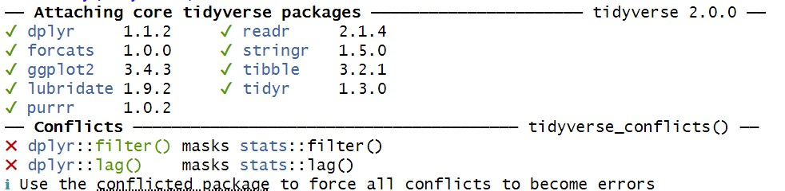
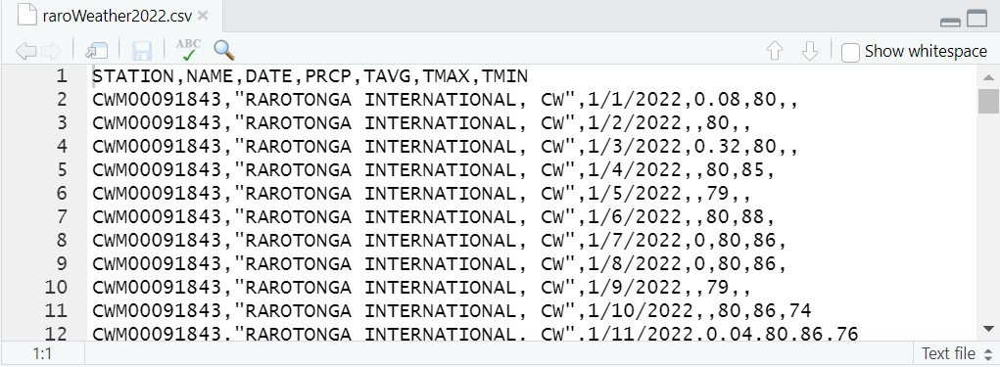

2 Importing data
In the first week we entered data by hand into vectors, and then combined these vectors into matrices and dataframes. However, if we’re going to be making use of larger datasets, we would probably prefer to get the data from a source and have R read the data for us. This section will take you through the basics, starting with an introduction to a new way to store datasets: tibbles.
Vectors, dataframes, and tibbles
So far, we’ve seen data in a couple of different forms. The primary way R handles data are as vectors, which are collections of values. We saw how we can read in a sequence of values from a text file using the scan function:
temp_f<-scan("Data/avtemp.txt")
Read 365 items
precip_in<-scan("Data/precip.txt")
Read 365 items
We’ve also seen how we can combine two or more of these into a table called a dataframe using the data.frame function:
weatherData<-data.frame(temp_f,precip_in)
All of these operations are taking place using Base R, which is all of the functions that come with R when you first download it. However, one of the strengths of R is that it is extensible by using libraries, also called packages. These usually contain functions that are built around specific tasks, like dealing with Munsell soil colors (munsell), or doing spherical trigonometry (geosphere), or conducting spatial point pattern analysis (spatstat).
In this course we will be making extensive use of packages that are in a family of packages called the tidyverse. These are built around a concept of tidy data and how it can ease the process of data analysis and visualization. This is something we’ll learn more about in the coming weeks.
In order to use the tidyverse packages, we first need to make sure we have them downloaded and installed on our computer. You can do this from the command line with the install.packages function:
install.packages("tidyverse")
Note the quotes here, which means that this takes an argument that is a character value.
If you don’t have tidyverse installed, or if it needs updating, then a series of fast operations will happen in the console window. This is going through the process of downloading the necessary files on the machine and putting them in the right directories. R my ask to restart as you do this, and it’s OK to agree.
After installation, you need to load the package (or packages, in this case). To do this, you use the library function:
library(tidyverse)
Since it is an installed package, this doesn’t need quotation marks around the name. Doing this will bring up some text in the console that looks like this:

This is showing that tidyverse is adding a number of packages, such as ggplot2 and dplyr, that are useful for cleaning, tidying, and visualizing data. We will hear a lot more about these later. For now, the one we are interested in is tibble, which is used for dealing with table data. We can create a tibble1 much like we create a dataframe:
weatherData2<-tibble(temp_f,precip_in)
Why tibbles?
The way that R is used has changed significantly since the dataframe was first developed. The tibble has a few advantages over the dataframe that are worth mentioning.
Dataframes automatically treat character data as factors, or meaningful categories, which can create issues if they are not intended to be so. Tibbles do not do this unless it is requested.
When a dataframe is returned in the console window, it can be difficult to view if it has too many rows or columns. A tibble provides a summary with the first 10 rows and as many columns as will fit, and indicates if there is more that is not visible.
There are other reasons as well2, but for many operations, tibbles will serve the same role as a dataframe, and vice versa. There are going to come times when you’ll be using a function that asks for a dataframe as an argument, or returns a tibble as an output. Because of this, it is good to be aware of the data formats in Base R as well as tidyverse.
You have a tibble and dataframe with the same data, so worth having a look at some of the features that make them different. Try entering both weatherData and weatherData2 into the command line and seeing what they look like. What additional information do you see in the tibble?
Importing data from files to tibbles
Rather than build a tibble from vectors, this time we’re going to import table data directly from a file. To do this, we will use the read_csv function:
raro2022<-read_csv("Data/raroWeather2022.csv")
The argument given here is a character string with the location of the file in the Data folder of the working directory. The data file in this case is a .csv file, which stands for comma-separated values. This is a very common file type for storing and sharing data, where each row is broken up by commas that mark where the columns are. If you click on this in the File tab, it should look something like this in the Source pane:

The data themselves are 2022 weather records from the airport at Rarotonga, the most populous island in the South Pacifc nation of the Cook Islands.
These data were downloaded from the National Oceanic and Atmospheric Administration’s Climate Data Online portal. You should see the column names in the top line:
STATION, NAME, DATE, PRCP,TAVG,TMAX,TMIN
These refer to the weather station number, the weather station name, the date, precipitation in inches, and temperature average, maximum, and minimum in fahrenheit. Each line below this is a daily record for these. In some cases, data was not recorded (e.g., TMAX and TMIN on the first day), and so the spaces where those values would be is left blank.
Besdes being real, this dataset is no different from the datasets we’ve created for ourselves so far. So this means that you can treat each column as a vector, access these columns using the $ operator, and use any of the functions we’ve learned so far on these data.
Create a new R script called RaroDataViz. Using the Rarotonga weather data, see if you can write code that will make the following happen:
Make a histogram of precipitation in 2022
Make a plot that shows the relationship between average temperature and precipitation in 2022
Find the mean daily average temperature in 2022
Save this in your Code folder when you’re done.
The term “tibble” refers to the data class tbl_df↩︎
These are enumerated here: https://adv-r.hadley.nz/vectors-chap.html#tibble↩︎